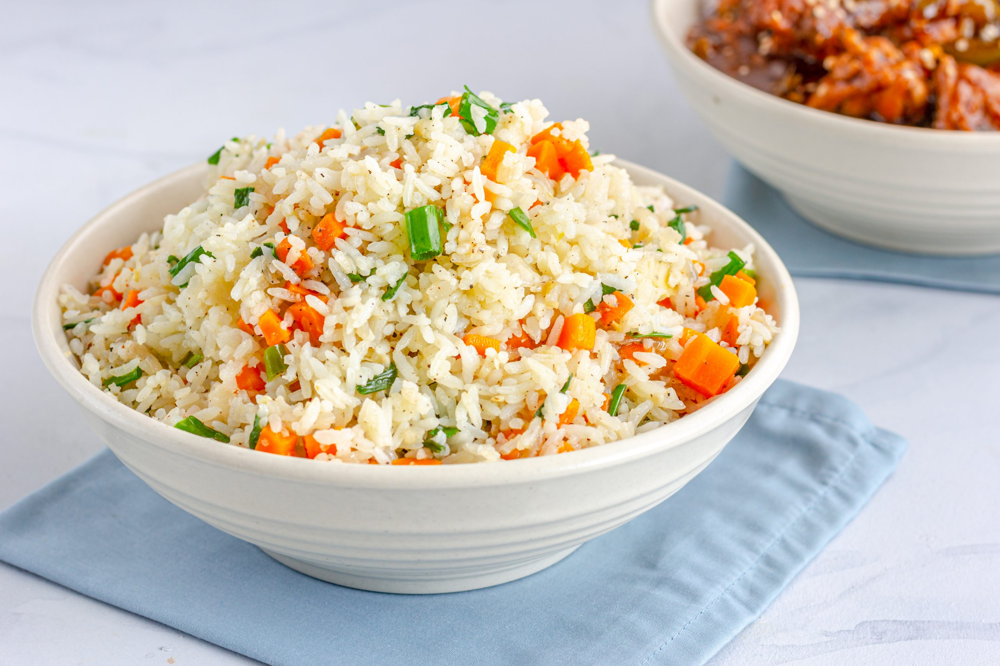

Lawrence's Recipe Book
Aloo Matar Curry(Indian)
Time: 35 minutes
| Ingredients | Quantity | Image |
|---|---|---|
| Baby potatoes | 10-12 |  |
| Frozen peas | 3 and 1/2 cup | |
| Cumin seeds | 1 teaspoon | |
| Coriander powder | 1 teaspoon | |
| Red chilli powder | 1/2 teaspoon | |
| Garam masala powder | 1/2 teaspoon | |
| Ginger | 1 inch | |
| Oil | 2 tablespoons | |
| Salt | as required |
Step 1: Wash the baby potatoes thoroughly. keep their skin intact. chop them into
two.
rinse
the peas as well.
Step 2: Steam (or boil) the potatoes for 5 minutes, then add the cauliflower and
cook
for
10 minutes more or until they’re soft.
Step 3: In the meanwhile, add the garlic, onion, ginger, tomatoes and tahini to a blender and blend until smooth.
Step 4: Add the mixture and the spices (turmeric, cumin, salt, paprika, cayenne and
pepper)
to a large pot, stir and
cook covered over medium-high heat for 5 minutes.
Step 5: Add the frozen peas and cook for 5 minutes more.
Step 6: Finally, add the steamed potatoes and cauliflower, stir and serve. We added some chopped fresh parsley on top and served the aloo gobi matar with some rye bread (optional).
Step 7: Keep it in a sealed container in the fridge for 4 to 5 days.
Chocolate covered Almond butter stuffed Dates
Time: 20 minutes
| Ingredients | Quantity | Image |
|---|---|---|
| Medjool dates, pitted | 25 pieces |  |
| Almond/Peanut butter | 1/4 cup | |
| Dark chocolate, chopped | 8 ounces | |
| Coconut oil(optional) | 1 tablespoon |
Step 1: Fill each date with some almond or peanut butter to taste (about 1/2 tsp). Set aside.
Step 2: Place the dark chocolate and the oil in a saucepan and cook over medium heat, stirring occasionally until the chocolate melts.
Step 3: Pour the melted chocolate into a bowl.
Step 4: Dip each date into chocolate mixture until completely covered. Then place dates onto a lined baking sheet.
Step 5: Let the chocolate cool down at room temperature and enjoy.
Step 6: Keep the dates in a sealed container at room temperature or in the fridge for up to a week.
Fried Rice
Time: 15 minutes
| Ingredients | Quantity | Image |
|---|---|---|
| Vegetable oil | 3 table spoons |  |
| Diced onions | 1 medium | |
| Carrot | 1 | |
| Zucchini | 1 cup | |
| Fresh green peas | 3-4 pods | |
| Green chillies | 2 | |
| Small tomato | 1 | |
| Black pepper | 1 | |
| Salt | 1/2 tsp | |
| Oregano | 1 tsp | |
| Chilli flakes | 1/2 tsp | |
| Cooked and cooled rice | 1 bowl |
Step 1:Heat oil tiil hot.
Step 2:Add onions, saute it for 20 seconds.
Step 3:Add chopped green chillies, saute for 10 seconds.
Step 4:Add all the vegetables, cook it for 2 minutesin medium flame.
Step 5:Add rice salt, black pepper and oregano.
Step 6:Mix it and continue cooking for 3-4 minutes.
Step 7:Sprinkle some chilli flakes before removing it from the stove.
Step 8:Seve hot